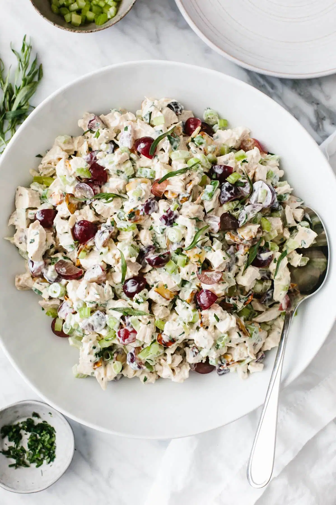

Chicken Salad Recipe

Description
Chicken salad is one of my favorite dishes to make and today we will learn how it is made.
This dish is best served during lunch time, it is easy to make and very healthy for the body.
Our recipe today will consist of a creamy, and filled with fresh and bright flavors. This dish keeps cooking to a minimum, making it the perfect throw-together meal.
Ingredients
- Chicken Breasts - 1 poach boneless skinless chicken breasts, but you could also use
leftover rotisserie chicken.
- Mayonnaise - The best creamy binder to mix all the inggredients together. And it's easy to make mayonnaise at home!
- Dijon Mustard - Just a little Dijon mustard adds great depth of flavor and a little spice.
- Red Grapes - You could use red or green seedless grapes
- Celery - Crisp celery crunch
- Green Onion - Adds savory flavor without being too pungent, which is perfect.
- Toasted Almonds - Toast your sliced almonds to bring out that nutty flavor.
- Parsley - One of the best herbs for adding to salads, just chop up a few tablespoons.
- Tarragon - The best secret ingredient! You'll be amazed at how much flavor just a little bit of tarragon adds to the salad.
- Lemon Juice - For that bright freshness.
- Salt and Pepper - Always season to your personal preference.
Steps
There is really only three steps:
- Toast: Lightly toast 1/2 cup of almonds in a pan on the stove. Let them cool completely to room temperature.
- Slice and Dice: First, dice up your chicken breasts into small 1/2-inch pieces. Then quarter the grapes, dice the celery, parsley and tarragon, and slice the green onion.
- Mix: Add all the ingredients to a large bowl and mix everything together until it's well combined. Season with a bit of salt and pepper - and you're done!